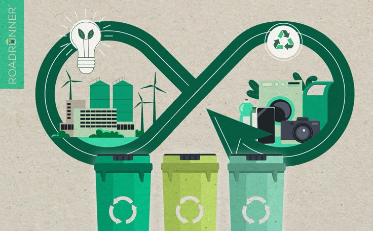
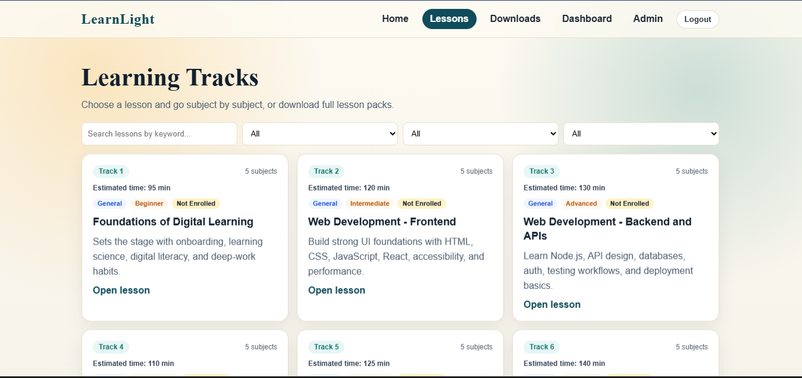
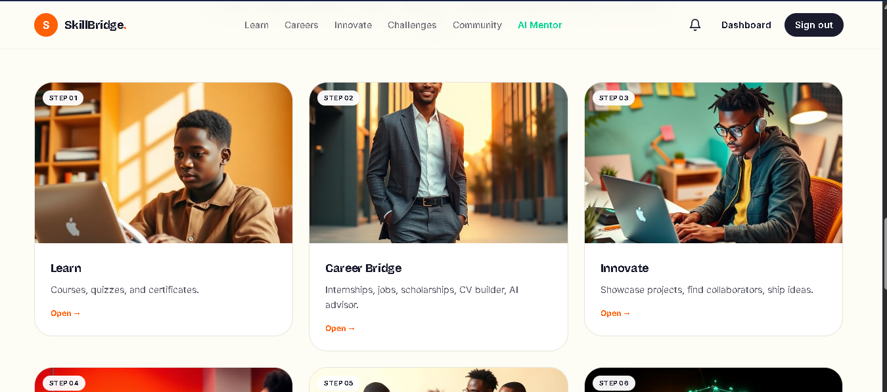
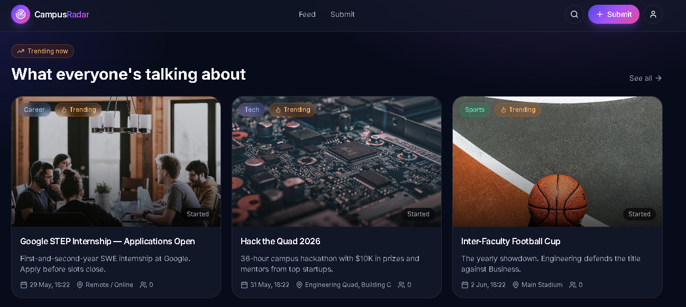

SELECTED WORK / CASE STUDIES
A growing portfolio of intelligent systems and digital products.
Projects

AI-Powered E-Commerce Platform
Full-stack e-commerce platform enhanced with AI recommendations, intelligent search, AI shopping assistant, and analytics.
2026
- Built with React frontend, Node.js/Express backend, Supabase database, and Python FastAPI AI service for recommendations and chatbot.
- Features AI-powered product search, personalized recommendations, wishlist, cart, Stripe payments, order tracking, and admin analytics dashboard.
- Combines full-stack development, authentication, payments, AI/LLM integration, semantic search, and data visualization.

VumaGrid
Founder & Systems Architect
AI-Powered Distributed Energy Management System (DERMS)
2026 – Present
- Founded and architecting an AI-powered energy management platform designed to optimize electricity usage in commercial buildings.
- Designing a distributed energy management system integrating renewable energy sources, backup systems, and grid infrastructure.
- Developing system concepts focused on intelligent energy optimization, predictive decision-making, and operational efficiency.
- Applying AI, data analytics, and software architecture principles to address energy reliability and cost management challenges.

Smartwaste
A smart waste tracking platform with bin logging, rewards, and admin oversight.
Chairman.Official Platform
An in-progress personal platform for leadership updates, public storytelling, and official communication.


Teachable Machine
An interactive image classification demo built with Teachable Machine.

My Sim League
A football simulation game offering a realistic managerial career across Europe's top 5 leagues.

Nairobi Hidden Gems
A Gen Z social discovery app for aesthetic places in Nairobi — available as a web app and an Android app.

Africa Rise Ecosystem
A digital growth ecosystem connecting learning, skills, and real-world opportunities for African students and young innovators.

Campus Pulse
A modern web platform for university students to discover, submit, and RSVP to campus events, hackathons, sports, and more — also available as a mobile app.
Continuous Integration // Git Repositories
Explore more experimental open-source builds on GitHub
From low-level networking and distributed messaging buses to native Android prototypes and computational geometry tools.
Trusted tools & platforms